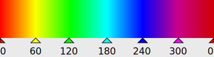

This little library enables you as a bare-metal html coder to create a simple and straight-looking slide show on your website.
The project is available on https://github.com/Atomek61/slideshow.
Put these lines in your html head:
<script src="https://www.atomek.de/js/slideshow/slideshow.js"></script>
<link rel="stylesheet" href="https://www.atomek.de/js/slideshow/slideshow.css"/>
Get the content of the code folder from Github or load it from my website as zip file, save them on your server and put these lines in your html head:
<script src="your-folder/slideshow.js"></script>
<link rel="stylesheet" href="your-folder/slideshow.css"/>
<div id="mydivid"></div>
<script>
window.onload = ()=> {new Slideshow(document.getElementById("mydivid"), [
"img1.jpg", "Fliegenpilz",
"img2.jpg", "Blautäubling",
"img3.jpg", "Parasolpilz",
"img4.jpg", "Schopftintling"
]);}
</script>
When your side loads a Slideshow instance will be created and the html-contents of your element automatically receives the required html code for your slide show.
Another way to supply the image list is to write the list of images with img-tags by your own. In this case you simply ommit the second parameter of the constructors call. Demo B demonstrates this method. Have look on the demos source code and note that you must preserve the classes in the code.
Note: When youre images are different in size and aspect ration, its a good idea to add a style like aspect-ratio: 4/3; width: 80%; to your div element, where the aspect-ratio meets your images size.
container is the block element (a div) which contains the images.
picturelist is an optional array with pairs of url and title, each describing an image file. If a picturelist is defined, the container should be empty and will be automatically filled with html code forming a valid list of img tags and some controls.
Example: let slideshow = new Slideshow(document.getElementById("mydiv"), ["demo/img1.jpg", "Image 1", "demo/img2.jpg", "Image 2"]);
To show a picture, assign its 0-based index to this property. If the value is outside the range, the modulo value will be assigned. Its not required to check the value before assignment.
Example: slideshow.imageIndex += 2;
Interval to the next image in milliseconds. Start the automatic slideshow (cinema mode) with slideshow.start();. Default value is 4000 ms. The minimum is 100 ms.
Example: slideshow.cinemaInterval = 3000;
Note: you can change the speed with the speed property too.
By default the automatic slideshow is interrupted when the user clicks a navigation control (bullet or prev/next). This behaviour can be changed by the variable autoStop;
This boolean property controls fullscreen mode. Because the function uses the MDN API, its not guaranteed to work in all browser. However, in FireFox it works fine.
To call methods of the Slideshow instance, you will have to store it in a global variable. Then you can access the object later.
Starts the slideshow. If immediate is true, the next image will be shown immediately.
Example: slideshow.start();
Stops the slideshow. Note: the slideshow is stopped whenever you click on one of the controls.
Simply divides the interval by the factor. The default interval is 4s.
Usually you link the main css file slideshow.css. This will create the normal appearance with title and bullets at the upper or lower borders outside of the image. The title and the bullets can be placed on the image surface by adding the css file fullscreen.css after the file slideshow.css. This lets the slideshows container be fully filled out. Remember the new aspect-ratio css property to control a container block elements size. If most of your pictures have a 16/9 ratio, consider to set the aspect-ratio: 16:9;.

To change the symbols colors edit the slideshow.css file and change the hue-rotate value, in degrees according to the image.
:root {
--svgNormal: hue-rotate(220deg) grayscale(60%) brightness(200%);
--svgHover: hue-rotate(320deg) grayscale(10%) brightness(200%) saturate(50%);
}
Create a list of images with titles and let slideshow do the work for you.
Click Demo A and have a look on the source code.
Create the div, img and span tags by your own and let slideshow put some live to them.
Click Demo B and have a look on the source code.
Cinema mode: create an html page suitable for a fullscreen slide show of your images.
Click Demo C, press F11 and have a look on the source code. Simple - isnt it?
This example demonstrates the change of the speed in cinema mode. The buttons onclick event assigns a speed in ms: slideshow.cinemaInterval = 1000;
Click Demo D, press one of the spped buttons and have a look on the source code.